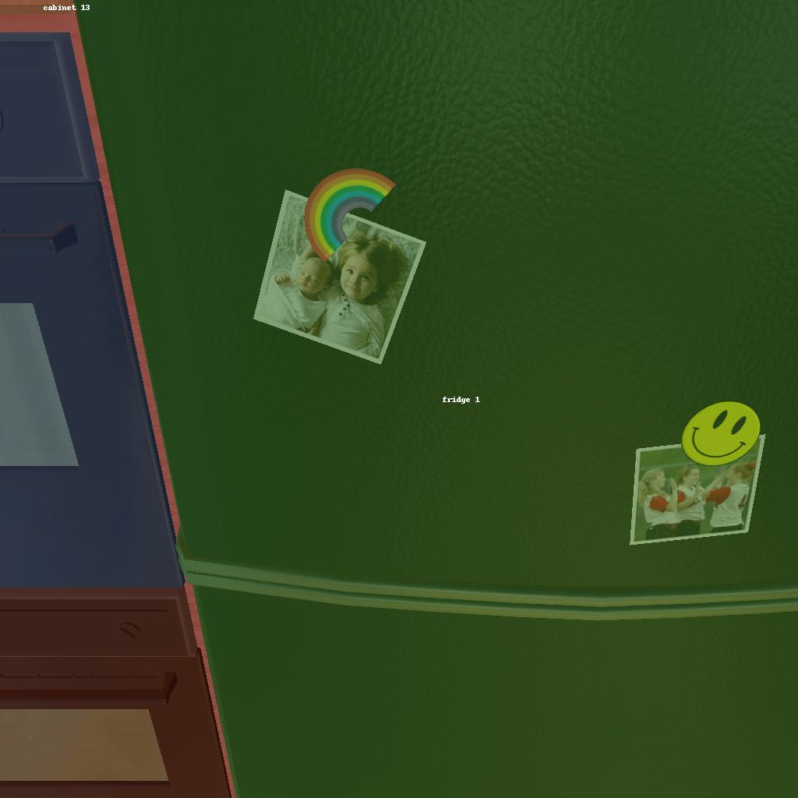
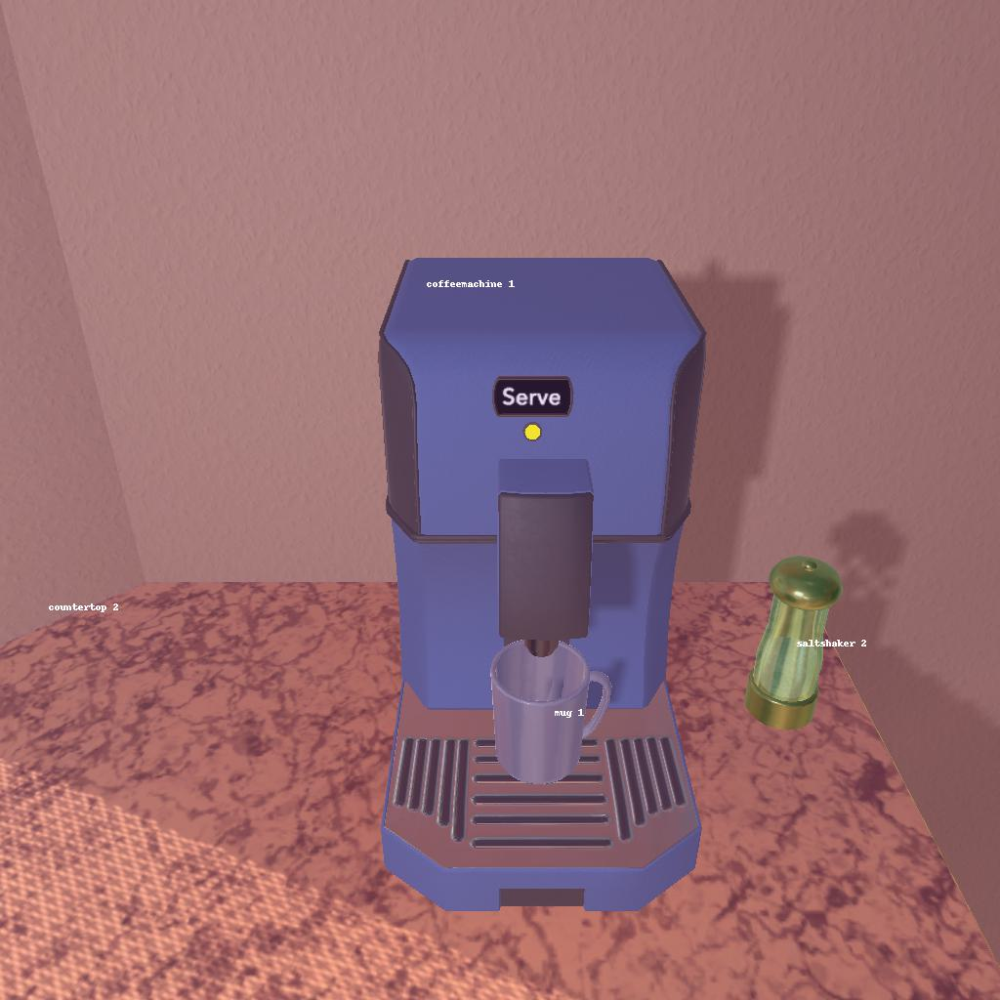
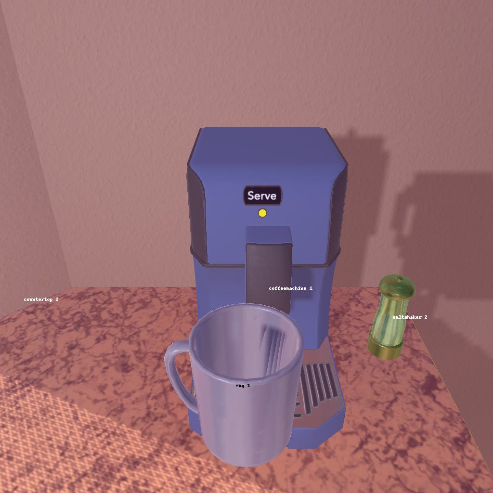

---------------------------------------------------------task: 15---------------------------------------------------------
--------------------------------------------------------------------------------------------------------------------------------------------------------------------
--------------------------------------------------------------------------------------------------------------------------------------------------------------------
Step:--------------------------------------------------------------------------11-------------------------------------------------------------------------------
----------------------------------------
VLM Prompt:
Image1:
Image2:
Image3:
**Instruction**
1. Analyze the provided image to identify all visible household objects, focusing on those relevant to the task description "cool some mug and put it in coffeemachine."
2. Use the analysis of the image and the task hint "The agent must find an object of the desired type, pick it up, go to a fridge, cool the object with the fridge, then find the correct location to place it, and put it down there. The agent does not need to use the fridge button or open the fridge to cool the object, and the agent just needs to do action that is "cool the object with the fridge"." to answer the question: what is the most reasonable action in the choices for the task description "cool some mug and put it in coffeemachine"?
4. Decide and write the answer using the template: The answer is: (i): , where i is the real number. If there is no desired object in the image, search every place based on **Initial Observation** to find the object. And if no one is exactly correct, choose a similar answer.
**Initial Observation**
You are in the middle of a room. Looking quickly around you, you can see cabinet (1-15), fridge (1), countertop (1-4), drawer (1-4), microwave (1), toaster (1), coffeemachine (1), garbagecan (1), sink (1), stoveburner (1-3), sinkbasin (1)
**Answer Choices**
(1): go to cabinet 1
(2): go to cabinet 2
(3): go to cabinet 3
(4): go to countertop 1
(5): go to cabinet 4
(6): go to cabinet 5
(7): go to cabinet 6
(8): go to cabinet 7
(9): go to drawer 1
(10): go to drawer 2
(11): go to cabinet 8
(12): go to drawer 3
(13): go to cabinet 9
(14): go to cabinet 10
(15): go to drawer 4
(16): go to microwave 1
(17): go to cabinet 11
(18): go to toaster 1
(19): go to cabinet 12
(20): go to cabinet 13
(21): go to cabinet 14
(22): go to cabinet 15
(23): go to countertop 2
(24): go to garbagecan 1
(25): go to countertop 3
(26): go to countertop 4
(27): go to sink 1
(28): go to stoveburner 1
(29): go to stoveburner 2
(30): go to stoveburner 3
(31): go to sinkbasin 1
(32): put mug 1 in/on coffeemachine 1
(33): examine mug 1
(34): examine coffeemachine 1
**Answer**
Let's think step by step by following the instructions.
----------------------------------------
----------------------------------------
Original Response:
Analyzing the images provided, we can identify the following objects relevant to the task description "cool some mug and put it in coffeemachine":
- In Image1, we can see a fridge labeled "fridge 1."
- In Image2 and Image3, we can see a coffeemachine labeled "coffeemachine 1" and a mug labeled "mug 1."
Based on the task hint provided, the agent does not need to interact with the fridge using a button or open it; they just need to perform an action that is "cool the object with the fridge." Since the mug is already visible on the countertop in Image2 and Image3, it's reasonable to assume that the agent should pick up the mug from the countertop, cool it with the fridge, and then put it in the coffeemachine.
However, the action choices provided do not include any actions that directly pertain to cooling the mug with the fridge or picking up the mug from the countertop. The closest relevant action from the choices given would be to put the mug in the coffeemachine, as the other actions refer to going to various locations, examining objects, or interacting with unrelated objects.
The answer is: (32): put mug 1 in/on coffeemachine 1.
----------------------------------------
----------------------------------------
>>> Refine Original VLM Response and Get Pure Action: put mug 1 in/on coffeemachine 1
----------------------------------------
-----------------------------------------------------------------
Running time: 11.260214567184448 seconds
Total Money: 9.39037
-----------------------------------------------------------------
-----------------------------------------------------------------
Text Observation:You put the mug 1 in/on the coffeemachine 1.
-----------------------------------------------------------------
UNSUCCEED